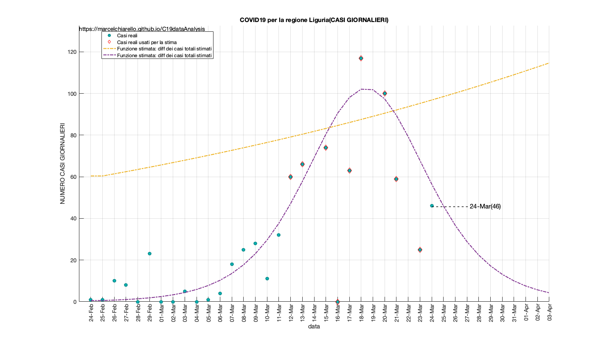

COVID19 Output analisi dati aggiornati al 24 Marzo 2020 DRAFT - Work in Progress EDIT: - Rimossi i grafici relativi alle singole province. Verrano aggiunti in seguito
Software utilizzato: Matlab 2018a
Questo report è relativo all' elaborazione dei dati sulla diffusione del COVID-19 in Italia e nelle singole regioni/province. I dati sono forniti dalla protezione civile Italiana, consultabili al segunte link:
"https://github.com/pcm-dpc/COVID-19"
Tale report non è da intendersi come ufficiale o come definitivo nei termini delle previsioni incluse. I modelli non sono di tipo predittivo, bensì equazioni che descrivono i dati disponibili fino a questo momento. Il loro scopo è quello di valutare l andamento attuale, in modo da poter dedurre una eventuale accelerazione o decelerazione del contagio. In generale per ogni campione di dati viene selezionata una prima finestra temporale e la si utilizza per elaborare il modello (fitting) per poi confrontarlo con i giorni successivi.
I valori reali che non sono stati utilizzati per la stima del modello possono sia riferirsi a giorni passati, sia a giorni futuri, per una mera valutazione qualitativa.
-Per quanto concerne i dati regionali e provinciali, il fit è di tipo esponenziale/lineare. Una stima della funzione logistica/sigmoide viene effettuata per alcune regioni e/o province. Tale andamento viene stimato sulla base di una finestra temporale precedente con il fine di verificare che il punto/i punti futuri si collochino al di sopra o al di sotto della curva esponenziale, nell'assunzione che tale scostamento indichi un accelerazione o decelerazione del contagio.
-Per quanto concerne i dati nazionali, viene anche effettuata una stima qualitativa sulla base della funzione logistica/sigmoide, nell'assunzione che il giorno previsto di azzeramento dei contagi, sia conservativo verso il limite inferiore, ossia la minima data che occorre aspettare.
-Le stime vengono effettuate minimizzando la distanza quadratica media dalle curve ed i casi reali (Non Linear Least Square). Gli algoritmi, le funzioni i parametri ed i risultati (della stima) dono riportati per ogni fit. Ogni modello non tiene conto dei punti iniziali secondo l'ipotesi di una sottostima dei contagi nei giorni che vanno da fine Febbraio/inizio Marzo.
Modelli e report sono oggetto di continua revisione.
Source: https://github.com/marcelchiarello/C19dataAnalysis
Site: https://marcelchiarello.github.io/C19dataAnalysis/
Author: Marcello Chiarello
marcello.chiarello@outlook.com
Contents
- GRAFICI ITALIA
- GRAFICI PUGLIA
- GRAFICI LOMBARDIA
- GRAFICI VENETO
- GRAFICI PIEMONTE
- GRAFICI EMILIA ROMAGNA
- GRAFICI CAMPANIA
- GRAFICI SICILIA (Non presente)
- GRAFICI ABRUZZO
- GRAFICI BASILICATA
- GRAFICI CALABRIA
- GRAFICI CAMPANIA
- GRAFICI FRIULI VENEZIA GIULIA
- GRAFICI LAZIO
- GRAFICI LIGURIA
- GRAFICI MARCHE
- GRAFICI MOLISE
- GRAFICI P.A. Bolzano
- GRAFICI P.A. Trento
- GRAFICI SARDEGNA (Non presente)
- GRAFICI TOSCANA
- GRAFICI UMBRIA
- GRAFICI VALLE D' AOSTA
- DATI ITALIA
- DATI PUGLIA
- DATI LOMBARDIA
- DATI VENETO
- DATI PIEMONTE
- DATI EMILIA ROMAGNA
- DATI CAMPANIA
- DATI SICILIA
- DATI ABRUZZO
- DATI BASILICATA
- DATI CALABRIA
- DATI CAMPANIA
- DATI VENEZIA GIULIA
- DATI LAZIO
- DATI LIGURIA
- DATI MARCHE
- DATI MOLISE
- DATI P.A. Bolzano
- DATI P.A. Trento
- DATI SARDEGNA
- DATI TOSCANA
- DATI UMBRIA
- DATI VALLE D' AOSTA
GRAFICI ITALIA
RUN DATA: 24-Mar-2020 *********************** Stima e previsione dati nazionali Model Data Intervallo dati utilizzati per la stima del modello: 10-Mar :: 23-Mar
GRAFICI PUGLIA
RUN DATA: 24-Mar-2020 *********************** Stima e previsione dati regionali Intervallo dati utilizzati per la stima del modello: 12-Mar :: 23-Mar
GRAFICI LOMBARDIA
RUN DATA: 24-Mar-2020 *********************** Stima e previsione dati regionali Intervallo dati utilizzati per la stima del modello: 12-Mar :: 23-Mar
GRAFICI VENETO
RUN DATA: 24-Mar-2020 *********************** Stima e previsione dati regionali Intervallo dati utilizzati per la stima del modello: 12-Mar :: 23-Mar
GRAFICI PIEMONTE
RUN DATA: 24-Mar-2020 *********************** Stima e previsione dati regionali Intervallo dati utilizzati per la stima del modello: 12-Mar :: 23-Mar
GRAFICI EMILIA ROMAGNA
RUN DATA: 24-Mar-2020 *********************** Stima e previsione dati regionali Intervallo dati utilizzati per la stima del modello: 12-Mar :: 23-Mar
GRAFICI CAMPANIA
RUN DATA: 24-Mar-2020 *********************** Stima e previsione dati regionali Intervallo dati utilizzati per la stima del modello: 12-Mar :: 23-Mar
GRAFICI SICILIA (Non presente)
GRAFICI ABRUZZO
RUN DATA: 24-Mar-2020 *********************** Stima e previsione dati regionali Intervallo dati utilizzati per la stima del modello: 12-Mar :: 23-Mar

GRAFICI BASILICATA
RUN DATA: 24-Mar-2020 *********************** Stima e previsione dati regionali Intervallo dati utilizzati per la stima del modello: 12-Mar :: 23-Mar
GRAFICI CALABRIA
RUN DATA: 24-Mar-2020 *********************** Stima e previsione dati regionali Intervallo dati utilizzati per la stima del modello: 12-Mar :: 23-Mar
GRAFICI CAMPANIA
RUN DATA: 24-Mar-2020 *********************** Stima e previsione dati regionali Intervallo dati utilizzati per la stima del modello: 12-Mar :: 23-Mar
GRAFICI FRIULI VENEZIA GIULIA
RUN DATA: 24-Mar-2020 *********************** Stima e previsione dati regionali Intervallo dati utilizzati per la stima del modello: 12-Mar :: 23-Mar
GRAFICI LAZIO
RUN DATA: 24-Mar-2020 *********************** Stima e previsione dati regionali Intervallo dati utilizzati per la stima del modello: 12-Mar :: 23-Mar
GRAFICI LIGURIA
RUN DATA: 24-Mar-2020 *********************** Stima e previsione dati regionali Intervallo dati utilizzati per la stima del modello: 12-Mar :: 23-Mar
GRAFICI MARCHE
RUN DATA: 24-Mar-2020 *********************** Stima e previsione dati regionali Intervallo dati utilizzati per la stima del modello: 12-Mar :: 23-Mar
GRAFICI MOLISE
RUN DATA: 24-Mar-2020 *********************** Stima e previsione dati regionali Intervallo dati utilizzati per la stima del modello: 12-Mar :: 23-Mar
GRAFICI P.A. Bolzano
RUN DATA: 24-Mar-2020 *********************** Stima e previsione dati regionali Intervallo dati utilizzati per la stima del modello: 12-Mar :: 23-Mar
GRAFICI P.A. Trento
RUN DATA: 24-Mar-2020 *********************** Stima e previsione dati regionali Intervallo dati utilizzati per la stima del modello: 12-Mar :: 23-Mar
GRAFICI SARDEGNA (Non presente)
RUN DATA: 24-Mar-2020 *********************** Stima e previsione dati regionali Intervallo dati utilizzati per la stima del modello: 12-Mar :: 23-Mar
GRAFICI TOSCANA
RUN DATA: 24-Mar-2020 *********************** Stima e previsione dati regionali Intervallo dati utilizzati per la stima del modello: 12-Mar :: 23-Mar
GRAFICI UMBRIA
RUN DATA: 24-Mar-2020 *********************** Stima e previsione dati regionali Intervallo dati utilizzati per la stima del modello: 12-Mar :: 23-Mar
GRAFICI VALLE D' AOSTA
RUN DATA: 24-Mar-2020 *********************** Stima e previsione dati regionali Intervallo dati utilizzati per la stima del modello: 12-Mar :: 23-Mar
DATI ITALIA
RUN DATA: 24-Mar-2020
***********************
Stima e previsione dati nazionali
Model Data
Intervallo dati utilizzati per la stima del modello: 10-Mar :: 23-Mar
FIT_model1 =
General model:
FIT_model1(x) = a*exp(b*x) + c
Coefficients (with 95% confidence bounds):
a = 1.982e+04 (1.542e+04, 2.422e+04)
b = 0.09817 (0.08648, 0.1099)
c = -1.156e+04 (-1.681e+04, -6313)
Results1 =
struct with fields:
sse: 3.8576e+06
rsquare: 0.9991
dfe: 11
adjrsquare: 0.9989
rmse: 592.1923
FIT_model2 =
General model:
FIT_model2(x) = a/(exp(b*(x+c))+d)
Coefficients (with 95% confidence bounds):
a = 3.292e+04 (-4.778e+10, 4.778e+10)
b = -0.1868 (-0.2057, -0.1678)
c = -6.501 (-7.771e+06, 7.771e+06)
d = 0.2685 (-3.898e+05, 3.898e+05)
Results2 =
struct with fields:
sse: 5.0397e+06
rsquare: 0.9988
dfe: 10
adjrsquare: 0.9984
rmse: 709.9118
DATI PUGLIA
RUN DATA: 24-Mar-2020
TAbella casi giornalieri per la regione Puglia
TABLE =
6×2 table
province casiGiornalieri
_______________________ _______________
"Bari" 36
"Barletta-Andria-Trani" 3
"Brindisi" 1
"Foggia" 29
"Lecce" 12
"Taranto" 5
"Casi giornalieri totali:" "86"
"Casi regione totali:" "936"
fonte: elaborazione dei dati della protezione civile
***********************
Stima e previsione dati regionali
Intervallo dati utilizzati per la stima del modello: 12-Mar :: 23-Mar
FIT_model1 =
General model:
FIT_model1(x) = a*exp(b*x) + c
Coefficients (with 95% confidence bounds):
a = 262.3 (121.2, 403.4)
b = 0.1166 (0.08344, 0.1498)
c = -200.4 (-370.4, -30.51)
Results1 =
struct with fields:
sse: 2.8471e+03
rsquare: 0.9959
dfe: 9
adjrsquare: 0.9950
rmse: 17.7862
DATI LOMBARDIA
RUN DATA: 24-Mar-2020
TAbella casi giornalieri per la regione Lombardia
TABLE =
12×2 table
province casiGiornalieri
_______________________ _______________
"Bergamo" 257
"Brescia" 393
"Como" 54
"Cremona" 136
"Lecco" 81
"Lodi" 43
"Mantova" 108
"Milano" 375
"Monza e della Brianza" 324
"Pavia" 55
"Sondrio" 45
"Varese" 29
"Casi giornalieri totali:" "1900"
"Casi regione totali:" "30047"
fonte: elaborazione dei dati della protezione civile
***********************
Stima e previsione dati regionali
Intervallo dati utilizzati per la stima del modello: 12-Mar :: 23-Mar
FIT_model1 =
General model:
FIT_model1(x) = a*exp(b*x) + c
Coefficients (with 95% confidence bounds):
a = 2.024e+04 (4226, 3.626e+04)
b = 0.06086 (0.02726, 0.09447)
c = -1.323e+04 (-3.012e+04, 3659)
Results1 =
struct with fields:
sse: 2.2382e+06
rsquare: 0.9955
dfe: 9
adjrsquare: 0.9945
rmse: 498.6866
DATI VENETO
RUN DATA: 24-Mar-2020
TAbella casi giornalieri per la regione Veneto
TABLE =
7×2 table
province casiGiornalieri
_________ _______________
"Belluno" 19
"Padova" 93
"Rovigo" 2
"Treviso" 92
"Venezia" 38
"Verona" 129
"Vicenza" 53
"Casi giornalieri totali:" "426"
"Casi regione totali:" "5719"
fonte: elaborazione dei dati della protezione civile
***********************
Stima e previsione dati regionali
Intervallo dati utilizzati per la stima del modello: 12-Mar :: 23-Mar
FIT_model1 =
General model:
FIT_model1(x) = a*exp(b*x) + c
Coefficients (with 95% confidence bounds):
a = 2537 (1214, 3860)
b = 0.08307 (0.05615, 0.11)
c = -1482 (-2939, -24.59)
Results1 =
struct with fields:
sse: 5.6540e+04
rsquare: 0.9972
dfe: 9
adjrsquare: 0.9965
rmse: 79.2602
DATI PIEMONTE
RUN DATA: 24-Mar-2020
TAbella casi giornalieri per la regione Piemonte
TABLE =
8×2 table
province casiGiornalieri
______________________ _______________
"Alessandria" 129
"Asti" 26
"Biella" 27
"Cuneo" 42
"Novara" 51
"Torino" 298
"Verbano-Cusio-Ossola" 39
"Vercelli" 27
"Casi giornalieri totali:" "639"
"Casi regione totali:" "5356"
fonte: elaborazione dei dati della protezione civile
***********************
Stima e previsione dati regionali
Intervallo dati utilizzati per la stima del modello: 12-Mar :: 23-Mar
FIT_model1 =
General model:
FIT_model1(x) = a*exp(b*x) + c
Coefficients (with 95% confidence bounds):
a = 1310 (-88.77, 2710)
b = 0.1262 (0.05793, 0.1944)
c = -1064 (-2800, 672.8)
Results1 =
struct with fields:
sse: 4.0033e+05
rsquare: 0.9830
dfe: 9
adjrsquare: 0.9792
rmse: 210.9051
DATI EMILIA ROMAGNA
RUN DATA: 24-Mar-2020
TAbella casi giornalieri per la regione Emilia Romagna
TABLE =
9×2 table
province casiGiornalieri
____________________ _______________
"Bologna" 135
"Ferrara" 18
"Forlì-Cesena" 57
"Modena" 199
"Parma" 71
"Piacenza" 96
"Ravenna" 26
"Reggio nell'Emilia" 68
"Rimini" 49
"Casi giornalieri totali:" "719"
"Casi regione totali:" "9254"
fonte: elaborazione dei dati della protezione civile
***********************
Stima e previsione dati regionali
Intervallo dati utilizzati per la stima del modello: 12-Mar :: 23-Mar
FIT_model1 =
General model:
FIT_model1(x) = a*exp(b*x) + c
Coefficients (with 95% confidence bounds):
a = 2703 (2340, 3065)
b = 0.1055 (0.09767, 0.1134)
c = -1060 (-1483, -638.2)
Results1 =
struct with fields:
sse: 1.2001e+04
rsquare: 0.9998
dfe: 9
adjrsquare: 0.9997
rmse: 36.5169
DATI CAMPANIA
RUN DATA: 24-Mar-2020
TAbella casi giornalieri per la regione Campania
TABLE =
5×2 table
province casiGiornalieri
___________ _______________
"Avellino" 10
"Benevento" 1
"Caserta" 28
"Napoli" 45
"Salerno" 3
"Casi giornalieri totali:" "87"
"Casi regione totali:" "1091"
fonte: elaborazione dei dati della protezione civile
***********************
Stima e previsione dati regionali
Intervallo dati utilizzati per la stima del modello: 12-Mar :: 23-Mar
FIT_model1 =
General model:
FIT_model1(x) = a*exp(b*x) + c
Coefficients (with 95% confidence bounds):
a = 677.2 (87.9, 1266)
b = 0.07149 (0.03046, 0.1125)
c = -569.9 (-1203, 63.62)
Results1 =
struct with fields:
sse: 5.9347e+03
rsquare: 0.9934
dfe: 9
adjrsquare: 0.9919
rmse: 25.6791
DATI SICILIA
RUN DATA: 24-Mar-2020
TAbella casi giornalieri per la regione Sicilia
TABLE =
9×2 table
province casiGiornalieri
_______________ _______________
"Agrigento" 2
"Caltanissetta" 11
"Catania" 12
"Enna" 19
"Messina" 19
"Palermo" 61
"Ragusa" 0
"Siracusa" 0
"Trapani" 1
"Casi giornalieri totali:" "125"
"Casi regione totali:" "846"
fonte: elaborazione dei dati della protezione civile
***********************
Stima e previsione dati regionali
Intervallo dati utilizzati per la stima del modello: 12-Mar :: 23-Mar
FIT_model1 =
General model:
FIT_model1(x) = a*exp(b*x) + c
Coefficients (with 95% confidence bounds):
a = 63.35 (25.57, 101.1)
b = 0.2005 (0.1557, 0.2453)
c = 27.9 (-35.6, 91.4)
Results1 =
struct with fields:
sse: 2.8523e+03
rsquare: 0.9938
dfe: 9
adjrsquare: 0.9924
rmse: 17.8022
DATI ABRUZZO
RUN DATA: 24-Mar-2020
TAbella casi giornalieri per la regione Abruzzo
TABLE =
4×2 table
province casiGiornalieri
__________ _______________
"Chieti" 4
"L'Aquila" 7
"Pescara" -1
"Teramo" 16
"Casi giornalieri totali:" "26"
"Casi regione totali:" "689"
fonte: elaborazione dei dati della protezione civile
***********************
Stima e previsione dati regionali
Intervallo dati utilizzati per la stima del modello: 12-Mar :: 23-Mar
FIT_model1 =
General model:
FIT_model1(x) = a*exp(b*x) + c
Coefficients (with 95% confidence bounds):
a = 195 (5.248, 384.7)
b = 0.1228 (0.06137, 0.1843)
c = -164.6 (-397.6, 68.26)
Results1 =
struct with fields:
sse: 6.5084e+03
rsquare: 0.9862
dfe: 9
adjrsquare: 0.9831
rmse: 26.8915
DATI BASILICATA
RUN DATA: 24-Mar-2020
TAbella casi giornalieri per la regione Basilicata
TABLE =
2×2 table
province casiGiornalieri
_________ _______________
"Matera" 7
"Potenza" -5
"Casi giornalieri totali:" "2"
"Casi regione totali:" "92"
fonte: elaborazione dei dati della protezione civile
***********************
Stima e previsione dati regionali
Intervallo dati utilizzati per la stima del modello: 12-Mar :: 23-Mar
FIT_model1 =
General model:
FIT_model1(x) = a*exp(b*x) + c
Coefficients (with 95% confidence bounds):
a = 3.847 (0.8299, 6.864)
b = 0.279 (0.216, 0.342)
c = 0.8988 (-6.979, 8.777)
Results1 =
struct with fields:
sse: 124.6815
rsquare: 0.9872
dfe: 9
adjrsquare: 0.9844
rmse: 3.7220
DATI CALABRIA
RUN DATA: 24-Mar-2020
TAbella casi giornalieri per la regione Calabria
TABLE =
5×2 table
province casiGiornalieri
____________________ _______________
"Catanzaro" 3
"Cosenza" 16
"Crotone" 4
"Reggio di Calabria" 3
"Vibo Valentia" 1
"Casi giornalieri totali:" "27"
"Casi regione totali:" "317"
fonte: elaborazione dei dati della protezione civile
***********************
Stima e previsione dati regionali
Intervallo dati utilizzati per la stima del modello: 12-Mar :: 23-Mar
FIT_model1 =
General model:
FIT_model1(x) = a*exp(b*x) + c
Coefficients (with 95% confidence bounds):
a = 71.23 (16.59, 125.9)
b = 0.1391 (0.08806, 0.1902)
c = -53.49 (-124.4, 17.39)
Results1 =
struct with fields:
sse: 961.9221
rsquare: 0.9896
dfe: 9
adjrsquare: 0.9873
rmse: 10.3383
DATI CAMPANIA
RUN DATA: 24-Mar-2020
TAbella casi giornalieri per la regione Campania
TABLE =
5×2 table
province casiGiornalieri
___________ _______________
"Avellino" 10
"Benevento" 1
"Caserta" 28
"Napoli" 45
"Salerno" 3
"Casi giornalieri totali:" "87"
"Casi regione totali:" "1091"
fonte: elaborazione dei dati della protezione civile
***********************
Stima e previsione dati regionali
Intervallo dati utilizzati per la stima del modello: 12-Mar :: 23-Mar
FIT_model1 =
General model:
FIT_model1(x) = a*exp(b*x) + c
Coefficients (with 95% confidence bounds):
a = 677.2 (87.9, 1266)
b = 0.07149 (0.03046, 0.1125)
c = -569.9 (-1203, 63.62)
Results1 =
struct with fields:
sse: 5.9347e+03
rsquare: 0.9934
dfe: 9
adjrsquare: 0.9919
rmse: 25.6791
DATI VENEZIA GIULIA
RUN DATA: 24-Mar-2020
TAbella casi giornalieri per la regione Friuli Venezia Giulia
TABLE =
4×2 table
province casiGiornalieri
___________ _______________
"Gorizia" 2
"Pordenone" 31
"Trieste" 9
"Udine" 20
"Casi giornalieri totali:" "62"
"Casi regione totali:" "992"
fonte: elaborazione dei dati della protezione civile
***********************
Stima e previsione dati regionali
Intervallo dati utilizzati per la stima del modello: 12-Mar :: 23-Mar
FIT_model1 =
General model:
FIT_model1(x) = a*exp(b*x) + c
Coefficients (with 95% confidence bounds):
a = 445.1 (-167.3, 1057)
b = 0.0869 (0.014, 0.1598)
c = -308.8 (-989.4, 371.8)
Results1 =
struct with fields:
sse: 1.4703e+04
rsquare: 0.9797
dfe: 9
adjrsquare: 0.9752
rmse: 40.4183
DATI LAZIO
RUN DATA: 24-Mar-2020
TAbella casi giornalieri per la regione Lazio
TABLE =
5×2 table
province casiGiornalieri
___________ _______________
"Frosinone" 15
"Latina" 23
"Rieti" 2
"Roma" 116
"Viterbo" 28
"Casi giornalieri totali:" "184"
"Casi regione totali:" "1720"
fonte: elaborazione dei dati della protezione civile
***********************
Stima e previsione dati regionali
Intervallo dati utilizzati per la stima del modello: 12-Mar :: 23-Mar
FIT_model1 =
General model:
FIT_model1(x) = a*exp(b*x) + c
Coefficients (with 95% confidence bounds):
a = 339.3 (240.3, 438.2)
b = 0.1381 (0.1187, 0.1574)
c = -172.4 (-300.3, -44.62)
Results1 =
struct with fields:
sse: 3.0402e+03
rsquare: 0.9986
dfe: 9
adjrsquare: 0.9983
rmse: 18.3793
DATI LIGURIA
RUN DATA: 24-Mar-2020
TAbella casi giornalieri per la regione Liguria
TABLE =
4×2 table
province casiGiornalieri
___________ _______________
"Genova" 7
"Imperia" 26
"La Spezia" -6
"Savona" 19
"Casi giornalieri totali:" "46"
"Casi regione totali:" "1190"
fonte: elaborazione dei dati della protezione civile
***********************
Stima e previsione dati regionali
Intervallo dati utilizzati per la stima del modello: 12-Mar :: 23-Mar
FIT_model1 =
General model:
FIT_model1(x) = a*exp(b*x) + c
Coefficients (with 95% confidence bounds):
a = 4646 (-1.525e+04, 2.454e+04)
b = 0.01688 (-0.04807, 0.08183)
c = -4513 (-2.449e+04, 1.546e+04)
Results1 =
struct with fields:
sse: 1.8973e+04
rsquare: 0.9829
dfe: 9
adjrsquare: 0.9791
rmse: 45.9148
DATI MARCHE
RUN DATA: 24-Mar-2020
TAbella casi giornalieri per la regione Marche
TABLE =
5×2 table
province casiGiornalieri
_________________ _______________
"Ancona" 49
"Ascoli Piceno" 3
"Fermo" 6
"Macerata" 42
"Pesaro e Urbino" 59
"Casi giornalieri totali:" "159"
"Casi regione totali:" "2693"
fonte: elaborazione dei dati della protezione civile
***********************
Stima e previsione dati regionali
Intervallo dati utilizzati per la stima del modello: 12-Mar :: 23-Mar
FIT_model1 =
General model:
FIT_model1(x) = a*exp(b*x) + c
Coefficients (with 95% confidence bounds):
a = 3539 (551.9, 6527)
b = 0.0388 (0.01297, 0.06464)
c = -3085 (-6139, -31.31)
Results1 =
struct with fields:
sse: 1.2276e+04
rsquare: 0.9973
dfe: 9
adjrsquare: 0.9967
rmse: 36.9318
DATI MOLISE
RUN DATA: 24-Mar-2020
TAbella casi giornalieri per la regione Molise
TABLE =
2×2 table
province casiGiornalieri
____________ _______________
"Campobasso" 6
"Isernia" 0
"Casi giornalieri totali:" "6"
"Casi regione totali:" "64"
fonte: elaborazione dei dati della protezione civile
***********************
Stima e previsione dati regionali
Intervallo dati utilizzati per la stima del modello: 12-Mar :: 23-Mar
FIT_model1 =
General model:
FIT_model1(x) = a*exp(b*x) + c
Coefficients (with 95% confidence bounds):
a = 4.092 (-0.9835, 9.168)
b = 0.2291 (0.1329, 0.3252)
c = 9.093 (-0.7896, 18.98)
Results1 =
struct with fields:
sse: 107.4783
rsquare: 0.9646
dfe: 9
adjrsquare: 0.9568
rmse: 3.4557
DATI P.A. Bolzano
RUN DATA: 24-Mar-2020
TAbella casi giornalieri per la regione P.A. Bolzano
TABLE =
1×2 table
province casiGiornalieri
_________ _______________
"Bolzano" 57
"Casi giornalieri totali:" "57"
"Casi regione totali:" "781"
fonte: elaborazione dei dati della protezione civile
***********************
Stima e previsione dati regionali
Intervallo dati utilizzati per la stima del modello: 12-Mar :: 23-Mar
FIT_model1 =
General model:
FIT_model1(x) = a*exp(b*x) + c
Coefficients (with 95% confidence bounds):
a = 412.2 (-27.49, 851.9)
b = 0.08362 (0.02833, 0.1389)
c = -362.7 (-847.7, 122.3)
Results1 =
struct with fields:
sse: 6.4247e+03
rsquare: 0.9881
dfe: 9
adjrsquare: 0.9854
rmse: 26.7181
DATI P.A. Trento
RUN DATA: 24-Mar-2020
TAbella casi giornalieri per la regione P.A. Trento
TABLE =
1×2 table
province casiGiornalieri
________ _______________
"Trento" 87
"Casi giornalieri totali:" "87"
"Casi regione totali:" "1110"
fonte: elaborazione dei dati della protezione civile
***********************
Stima e previsione dati regionali
Intervallo dati utilizzati per la stima del modello: 12-Mar :: 23-Mar
FIT_model1 =
General model:
FIT_model1(x) = a*exp(b*x) + c
Coefficients (with 95% confidence bounds):
a = 276.4 (-51.33, 604.1)
b = 0.1242 (0.04891, 0.1994)
c = -182.6 (-586.6, 221.5)
Results1 =
struct with fields:
sse: 2.0402e+04
rsquare: 0.9792
dfe: 9
adjrsquare: 0.9745
rmse: 47.6114
DATI SARDEGNA
RUN DATA: 24-Mar-2020
TAbella casi giornalieri per la regione Sardegna
TABLE =
5×2 table
province casiGiornalieri
______________ _______________
"Cagliari" 3
"Nuoro" 4
"Oristano" 0
"Sassari" 49
"Sud Sardegna" 6
"Casi giornalieri totali:" "62"
"Casi regione totali:" "421"
fonte: elaborazione dei dati della protezione civile
***********************
Stima e previsione dati regionali
Intervallo dati utilizzati per la stima del modello: 12-Mar :: 23-Mar
FIT_model1 =
General model:
FIT_model1(x) = a*exp(b*x) + c
Coefficients (with 95% confidence bounds):
a = 166.3 (-175.6, 508.1)
b = 0.1009 (-0.01721, 0.2191)
c = -166.2 (-559.7, 227.3)
Results1 =
struct with fields:
sse: 8.7777e+03
rsquare: 0.9487
dfe: 9
adjrsquare: 0.9373
rmse: 31.2298
DATI TOSCANA
RUN DATA: 24-Mar-2020
TAbella casi giornalieri per la regione Toscana
TABLE =
10×2 table
province casiGiornalieri
_______________ _______________
"Arezzo" 10
"Firenze" 74
"Grosseto" 12
"Livorno" 22
"Lucca" 24
"Massa Carrara" 25
"Pisa" 19
"Pistoia" 14
"Prato" 22
"Siena" 16
"Casi giornalieri totali:" "238"
"Casi regione totali:" "2699"
fonte: elaborazione dei dati della protezione civile
***********************
Stima e previsione dati regionali
Intervallo dati utilizzati per la stima del modello: 12-Mar :: 23-Mar
FIT_model1 =
General model:
FIT_model1(x) = a*exp(b*x) + c
Coefficients (with 95% confidence bounds):
a = 1044 (542.9, 1545)
b = 0.09865 (0.0714, 0.1259)
c = -793.1 (-1366, -219.7)
Results1 =
struct with fields:
sse: 1.7063e+04
rsquare: 0.9970
dfe: 9
adjrsquare: 0.9963
rmse: 43.5420
DATI UMBRIA
RUN DATA: 24-Mar-2020
TAbella casi giornalieri per la regione Umbria
TABLE =
2×2 table
province casiGiornalieri
_________ _______________
"Perugia" 48
"Terni" 21
"Casi giornalieri totali:" "69"
"Casi regione totali:" "627"
fonte: elaborazione dei dati della protezione civile
***********************
Stima e previsione dati regionali
Intervallo dati utilizzati per la stima del modello: 12-Mar :: 23-Mar
FIT_model1 =
General model:
FIT_model1(x) = a*exp(b*x) + c
Coefficients (with 95% confidence bounds):
a = 200.5 (29.69, 371.3)
b = 0.1106 (0.05939, 0.1619)
c = -179.2 (-381.2, 22.89)
Results1 =
struct with fields:
sse: 3.2931e+03
rsquare: 0.9901
dfe: 9
adjrsquare: 0.9880
rmse: 19.1287
DATI VALLE D' AOSTA
RUN DATA: 24-Mar-2020
"TAbella casi giornalieri per la…" "Valle d'Aosta"
TABLE =
1×2 table
province casiGiornalieri
________ _______________
"Aosta" 7
"Casi giornalieri totali:" "7"
"Casi regione totali:" "400"
fonte: elaborazione dei dati della protezione civile
***********************
Stima e previsione dati regionali
Intervallo dati utilizzati per la stima del modello: 12-Mar :: 23-Mar
FIT_model1 =
General model:
FIT_model1(x) = a*exp(b*x) + c
Coefficients (with 95% confidence bounds):
a = 116.8 (42.29, 191.3)
b = 0.1311 (0.08965, 0.1725)
c = -123.2 (-217.2, -29.24)
Results1 =
struct with fields:
sse: 1.3547e+03
rsquare: 0.9930
dfe: 9
adjrsquare: 0.9914
rmse: 12.2688